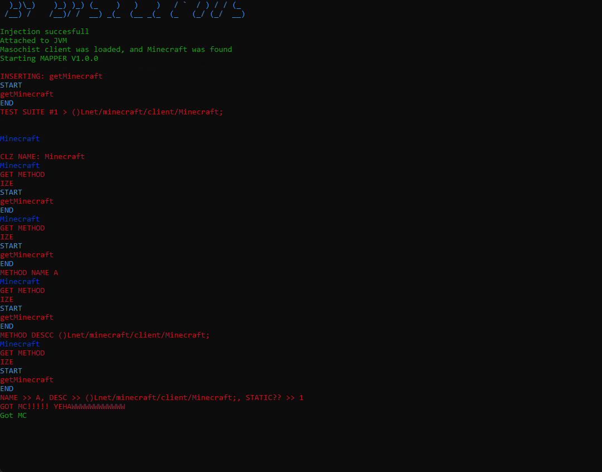

Minecraft and C++
Foreword
Interfacing with Minecraft in C++ is a relatively unexplored topic, only really explored by the likes of cheat clients, so I spent a small bit of time implementing a (small) program to interface with Minecraft, the results can be seen here
I also built a small program to allow people to 'skid' from and make their own implementations pertaining to Minecraft and C++
Attack vector
So, first I had to choose the way I want to interface with Minecraft, I'm sure there are many other methods, but I decided to settle with DLL injection
DLL injection would allow me to read and write to the memory of the process (Minecraft)
Making fire with my bare hands
So I had to make the program actually compile to a DLL, this is simply done with the singular cmake line:
1 | |
Then I had to create the entry point for the program, which also can simply be done with the special entry point DllMain
Note
This checks if the reason for usage is to attach an executable, and if so, starts a new thread with the purpose of setting everything up and ectera
1 2 3 4 5 6 7 8 9 | |
Interfacing with coffee
To actually interface with Java, I had to use a library by the name of JNI
So, now with JNI in my toolkit, I need to do the following steps to mess around with Minecraft:
-
Get the created Java virtual machines, and feed the first result into a
jvmvariable -
Get the runtime environment, this would allow me to mess with
Minecraftby calling functions and such -
Lastly, attach the current thread to the java virtual machine
That was straight forward enough to be sprawled out on a grand total of 17 lines!
You may see how I did it in more depth here
Coffee does not bond well with incremented letters
So, it's pretty obvious that Java isn't C++, in the slightest, which means, the pain of mapping Java to a slightly less high level language will have to be endured
Firstly, I need a way to store fields and methods, I created a class by the inventive name of JavaClassMethod, which, unlike the name suggests, can also store fields
This class allowed you to feed things like a method/field descriptor, a name, and whether the method/field is static or not, pretty basic right?
In a even more basic way, I created a class called JavaClassLayout (an even more inventive name!), which stored the fields and methods a class contains, oh, and the class name
Lastly, I created the class, JavaClass (my most inventive name by far), this is a class, which allows you to call functions in the class, and get results from them.
JavaClass also stores a layout of the class, so you can actually find the method to call from the class structure, additionally you can extend from JavaClass to make nice mappings, like so
Turns out companies don't want you to get your grubby little hands on the recipe to their coffee
Minecraft is obfuscated, this means that you aren't given method names or variable names and such, rather a mangled version of the original source code.
But, luckily for us, Mojang does have official mappings out in the open, as well as multiple community projects to provide custom mappings.
So, I used MCP mapping viewer which allow you easily view mappings.
So in credence of this knowledge, I created a JavaClassStructure class, which contains all the classes layouts, in terms of fields and methods.
Note
I used a nifty little pattern called MethodChaining to chain the class addition together
1 2 3 | |
Then I built a Mapper class, which trivially stores the class structure and allows you to get different classes and such
Reproducing the coffee
For the last steps I just needed to test it, I did this by extending JavaClass
1 | |
Then using two simple methods to:
- Get the method
getMinecraft - Call the method
getMinecraft
This was unexpectedly trivial
1 2 3 4 5 6 7 8 9 | |
Aftermath
After an exhorbant amount of debugging, it finally worked :)

Plans
Some future ideas:
- Autogenerated mappings with a script
- Cross versional support
- Refactor to make more like a library
- ...